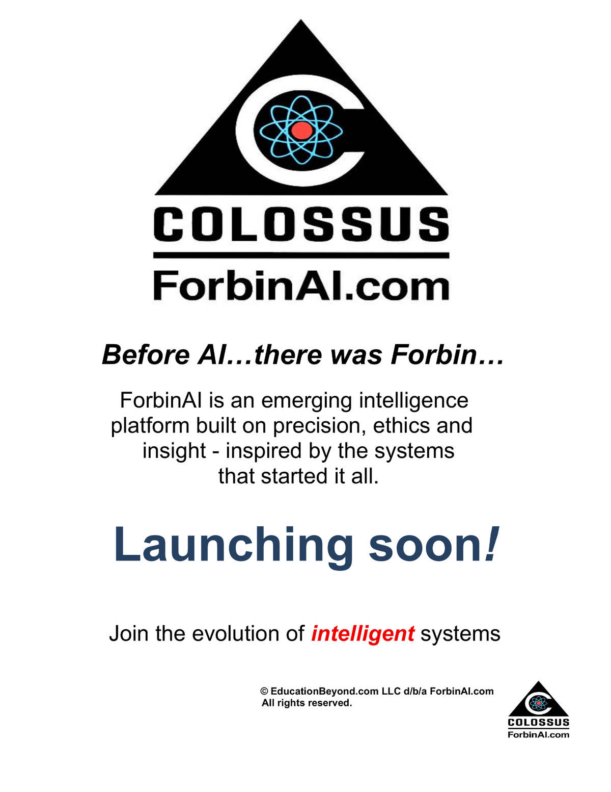

An independent AI governance framework designed to help organizations measure, monitor, and improve trust in artificial intelligence systems.
VIEW THE FRAMEWORKThe Colossus Framework™ Founding Principles Release, Version 0.9, establishes the framework’s core principles and foundational domains. Future releases will introduce the Colossus Risk Indicators™ (CRI), the Colossus Trust Index™ (CTI), and the Colossus Framework™ AI Governance Assessment.
VIEW ON GITHUBEvaluates harm, misuse, and unintended consequences.
Measures clarity, explainability, and openness.
Assesses responsibility, traceability, and governance.
Preserves human judgment, authority, and control.
Protects personal information, autonomy, and security.
Define the AI system, use case, and evaluation scope.
Evaluate governance, evidence, and risk indicators.
Generate quantitative and qualitative insights.
Provide risk-based recommendations.
Track performance, risk, and evolving conditions.
Be part of the early access community shaping trustworthy and human-centered AI.